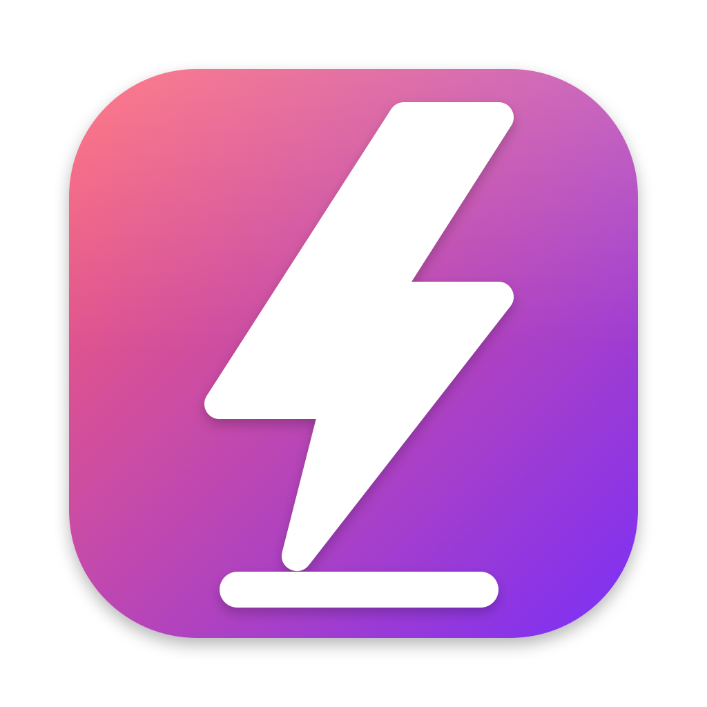
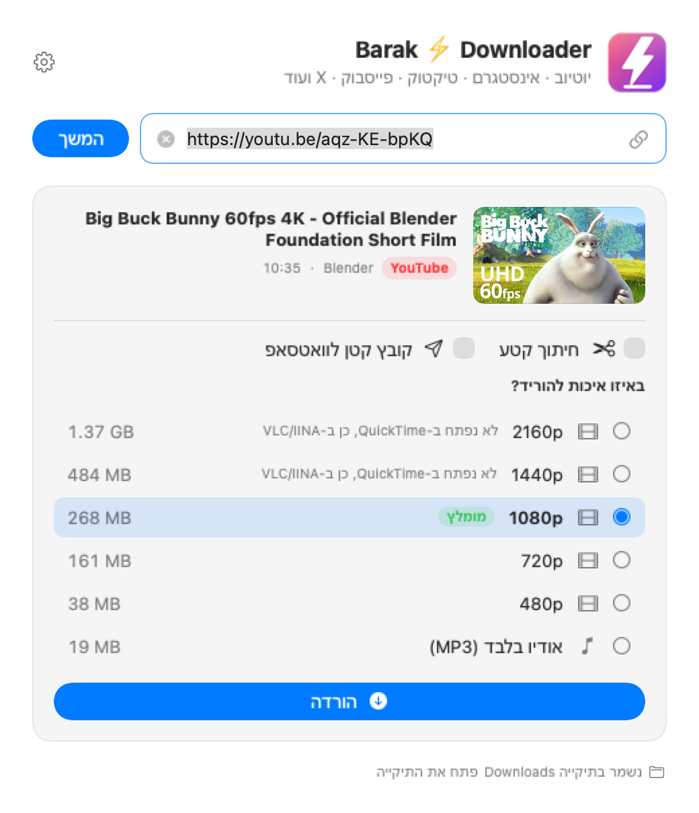
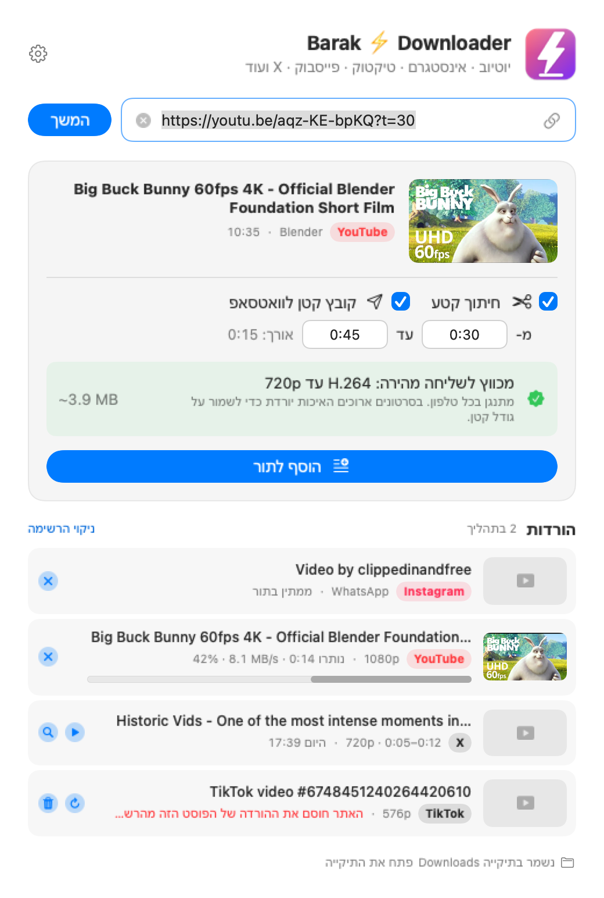
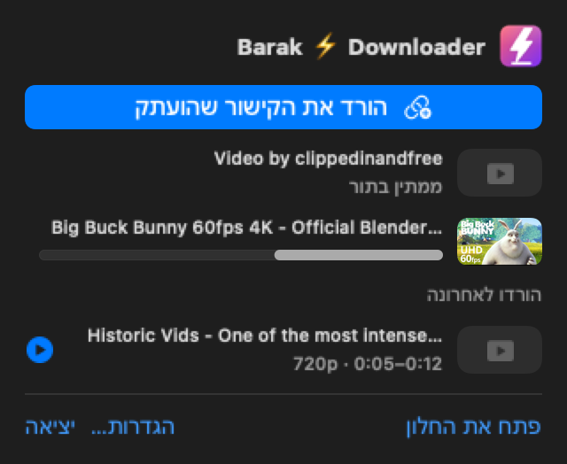
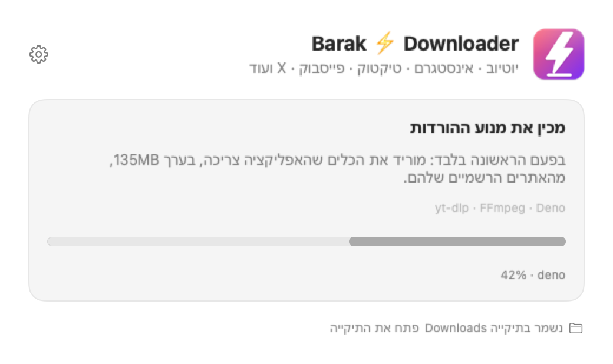

Barak ⚡ Downloaderלהוריד סרטונים למק, בלי אתרים מפוקפקים.
מדביקים קישור מיוטיוב, אינסטגרם, טיקטוק, פייסבוק או X, בוחרים איכות, וזהו. אפשר גם לחתוך קטע או להכין קובץ קטן לוואטסאפ.

מה יש בפנים
כל מה שצריך כדי לשמור סרטון, בלי פרסומות ובלי הרשמה.
איכות לבחירה
רק האיכויות שקיימות באמת בסרטון, עם הגודל המדויק של כל אחת. ברירת המחדל נפתחת בכל נגן.
חיתוך קטע
מורידים רק את הדקה שרוצים. קישור עם זמן (למשל ?t=90) פותח את החיתוך מאותה שנייה.
קובץ קטן לוואטסאפ
מכווץ לכ-15MB ומתנגן בכל טלפון, בלי לחפש אפליקציה נוספת.
תור והיסטוריה
מדביקים כמה קישורים ברצף. כל מה שירד נשאר ברשימה, עם "פתח" ו"הצג ב-Finder".
תוסף לכרום
כפתור בדפדפן, או קליק ימני על סרטון, שולח אותו ישר לאפליקציה.
MP3 עם עטיפה
אודיו בלבד, עם תמונת העטיפה ושם היוצר בתוך הקובץ.



התקנה
שתי דקות, פעם אחת.
- מורידים את הקובץ
Barak-Downloader.dmg, פותחים אותו, וגוררים את האפליקציה לתיקיית Applications.
- פותחים פעם ראשונה
macOS יציג הודעה שהוא לא יכול לאמת את האפליקציה. לוחצים "סיום" (לא "העבר לפח").
- מאשרים בהגדרות
הגדרות המערכת ← פרטיות ואבטחה ← גוללים למטה ← "פתח בכל זאת" ליד Barak Downloader, ומאשרים עם הסיסמה. צריך לעשות את זה רק פעם אחת.
- האפליקציה מכינה את עצמה
בפתיחה הראשונה היא מורידה את מנוע ההורדות (בערך 135MB). מכאן והלאה הכול מוכן.
תוסף לכרום (לא חובה)
- מורידים ופורסים
Barak-Chrome-Extension.zip. לחיצה כפולה פורסת אותו לתיקייה.
- פותחים את דף התוספים
בכרום:
chrome://extensions, ומפעילים למעלה "מצב מפתח" (Developer mode). - גוררים את התיקייה לדף
מעכשיו כפתור התוסף, או קליק ימני על קישור או סרטון, שולח אותו לאפליקציה. בפעם הראשונה כרום ישאל אם לפתוח את Barak Downloader; כדאי לסמן "תמיד".
שאלות
מאיפה האפליקציה מורידה את הכלים שלה?
yt-dlp ו-Deno מהדפים הרשמיים שלהם ב-GitHub. FFmpeg נבנה מהקוד הרשמי, בתהליך פתוח בריפו הזה. לכל קובץ יש קוד אימות (SHA-256), והאפליקציה בודקת אותו לפני שהיא משתמשת בקובץ.
מה קורה כשיוטיוב משנה משהו וההורדה מפסיקה לעבוד?
yt-dlp מתעדכן לבד פעם ביום. אם הורדה נכשלת, במסך השגיאה יש כפתור "עדכן את yt-dlp". כשיוצאת גרסה חדשה של האפליקציה עצמה, מופיעה הודעה בחלון.
זה חוקי?
הכלי עצמו חוקי, אבל תנאי השימוש של חלק מהאתרים אוסרים הורדה. השתמשו בו לסרטונים שלכם, לתוכן ברישיון חופשי, או לתוכן שקיבלתם רשות להוריד.
יש גרסה ל-Windows או לטלפון?
כרגע רק למק.